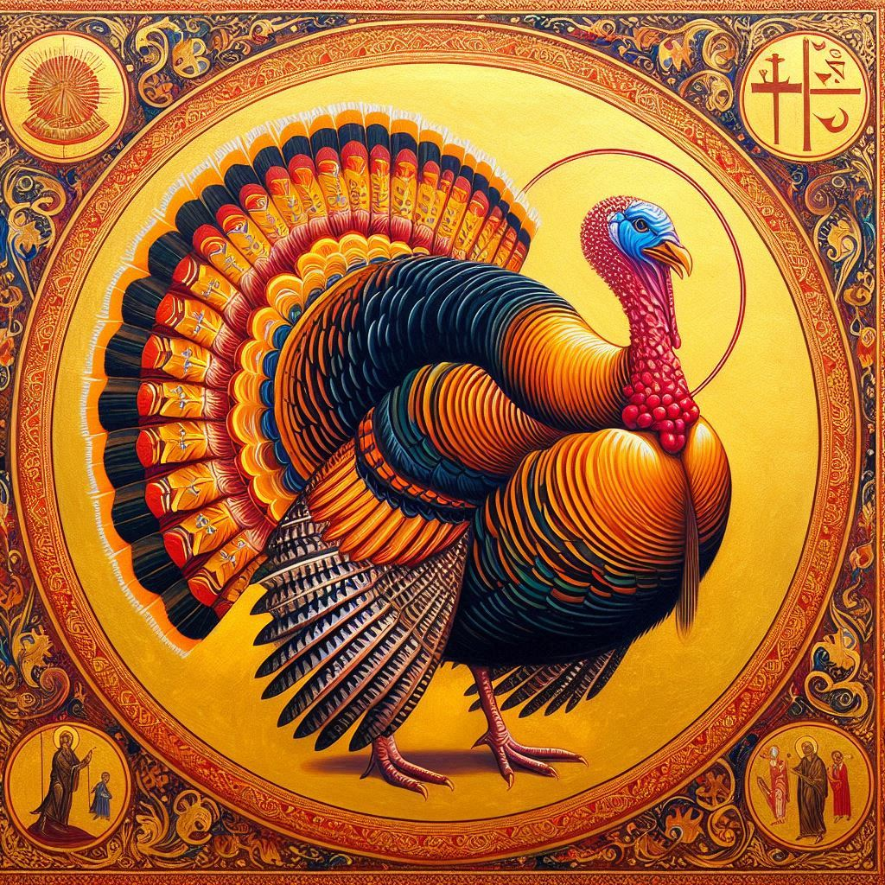
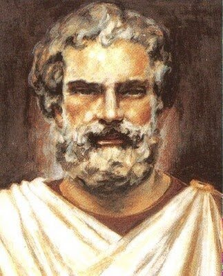
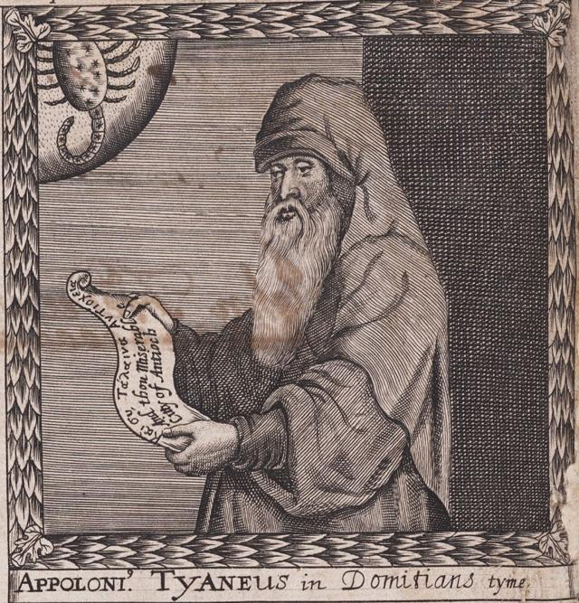
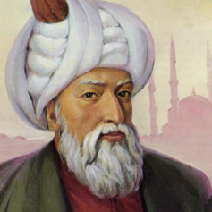
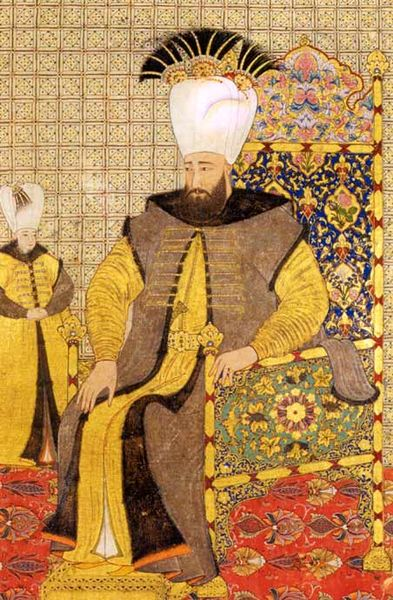

Arte Bizantino y Otomano - Turquía
Bienvenidos a nuestra galería de arte, donde se presenta una variedad de estilos y períodos históricos.
Arte Bizantino en Turquía El arte bizantino, que floreció durante el Imperio Bizantino desde el siglo IV hasta el XV, es conocido por su esplendor, riqueza y profunda espiritualidad. En Turquía, especialmente en la ciudad de Estambul (antigua Constantinopla), este arte alcanzó su apogeo, combinando elementos romanos con influencias cristianas. El arte bizantino y otomano en Turquía representa una herencia cultural inestimable, que abarca siglos de historia y una rica diversidad de influencias. Desde los mosaicos dorados y las majestuosas cúpulas de las iglesias bizantinas hasta los azulejos coloridos y las elegantes mezquitas otomanas, estas tradiciones artísticas ofrecen una ventana fascinante a la creatividad, la espiritualidad y la sofisticación técnica de dos de los imperios más influyentes del mundo antiguo. Hoy en día, estas obras maestras siguen siendo un testimonio del genio artístico y la riqueza cultural de Turquía, atrayendo a visitantes de todo el mundo que buscan admirar y comprender su legado perdurable.
Obras Emblemáticas
Turquía
Arte Bizantino, Arte Otomano

El arte bizantino y otomano en Turquía presenta una rica herencia cultural, marcada por algunas obras emblemáticas que reflejan la majestuosidad y la influencia de estas dos civilizaciones.
Santa Sofía (Hagia Sophia): Ubicación: Estambul Descripción: Originalmente construida como una catedral cristiana ortodoxa en 537 bajo el emperador Justiniano I, Santa Sofía es una de las obras maestras más emblemáticas del arte bizantino. Su cúpula masiva y su innovador diseño arquitectónico fueron revolucionarios para su tiempo. Decorada con mosaicos deslumbrantes que representan escenas religiosas, esta estructura sirvió como catedral, mezquita y ahora museo, simbolizando la intersección de diferentes culturas y religiones a lo largo de los siglos.
Mezquita Azul (Sultan Ahmed Mosque): Ubicación: Estambul Descripción: Construida entre 1609 y 1616 durante el reinado del sultán Ahmed I, la Mezquita Azul es famosa por su impresionante cúpula central, sus seis minaretes y su interior decorado con más de 20,000 azulejos de cerámica de Iznik en varios tonos de azul. Esta mezquita es un símbolo del apogeo del arte y la arquitectura otomana, integrando elementos bizantinos con la estética islámica.
Artistas Principales
Antemio de Tralles y Isidoro de Mileto
Arquitectos griegos que diseñaron la Hagia Sophia, una de las obras maestras de la arquitectura bizantina, conocida por su enorme cúpula y sus mosaicos impresionantes.
Apollonio de Tiana
Mosaísta cuyo trabajo se centró en la creación de mosaicos religiosos que adornaban muchas iglesias bizantinas.
Mimar Sinan
El arquitecto más famoso del período otomano, conocido por su innovador diseño de mezquitas y otras edificaciones. Su trabajo incluye más de 300 estructuras y es un ícono del arte y la arquitectura otomana.
Levni
Pintor y miniaturista de la corte otomana, conocido por sus detalladas y coloridas miniaturas que documentan eventos históricos y ceremoniales.
Levni
Pintor y miniaturista de la corte otomana, conocido por sus detalladas y coloridas miniaturas que documentan eventos históricos y ceremoniales.
Levni
Pintor y miniaturista de la corte otomana, conocido por sus detalladas y coloridas miniaturas que documentan eventos históricos y ceremoniales.
Levni
Pintor y miniaturista de la corte otomana, conocido por sus detalladas y coloridas miniaturas que documentan eventos históricos y ceremoniales.
Levni
Pintor y miniaturista de la corte otomana, conocido por sus detalladas y coloridas miniaturas que documentan eventos históricos y ceremoniales.
Levni
Pintor y miniaturista de la corte otomana, conocido por sus detalladas y coloridas miniaturas que documentan eventos históricos y ceremoniales.
Levni
Pintor y miniaturista de la corte otomana, conocido por sus detalladas y coloridas miniaturas que documentan eventos históricos y ceremoniales.
Formulario de Inscripción
Calendario de Exposiciones
Evento 1
Evento: Exposición de Arte Bizantino y Otomano Fecha: Del 15 de julio al 30 de agosto de 2024 Lugar: Galería de Arte Estambul Moderna Dirección: Calle Istiklal No. 123, Beyoglu, Estambul, Turquía Descripción del Evento: La Galería de Arte Estambul Moderna se complace en presentar una exclusiva exposición de Arte Bizantino y Otomano, que ofrece una mirada fascinante a la rica herencia artística de Turquía. Esta exhibición única reúne obras maestras del arte bizantino y otomano, incluyendo mosaicos, miniaturas, cerámicas, caligrafía y más, proporcionando a los visitantes la oportunidad de sumergirse en la historia y la belleza de estos dos influyentes períodos artísticos. Programación: Inauguración: 15 de julio de 2024, 18:00 - 21:00